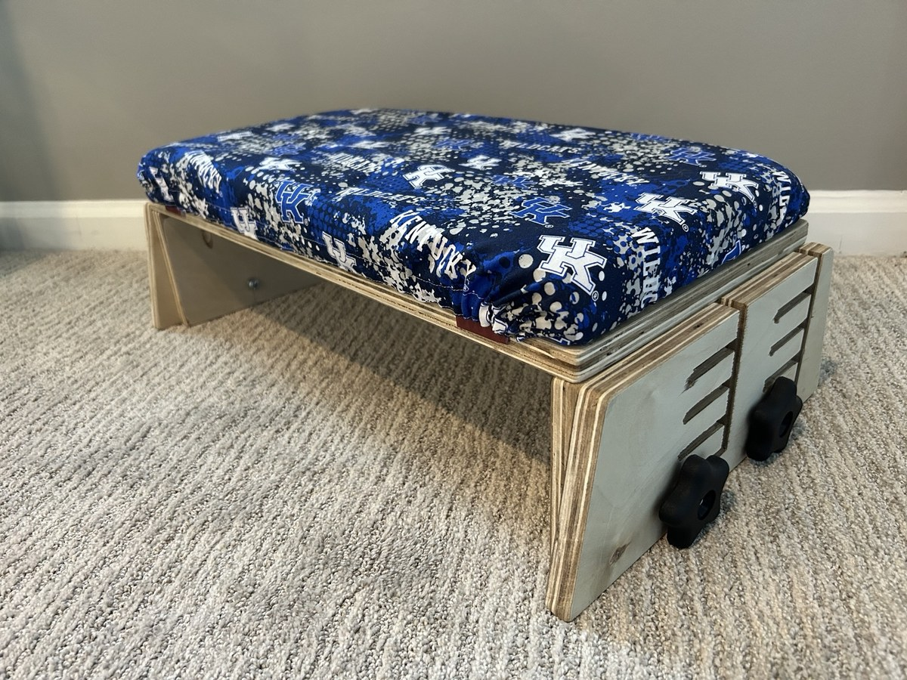

Adaptive DIY plans
Build useful adaptive equipment with care.
Build with care. Share with love.
Free, practical build plans for families and makers. The adjustable therapy bench is the first full project guide.

Build with care. Share with love.
Free, practical build plans for families and makers. The adjustable therapy bench is the first full project guide.
